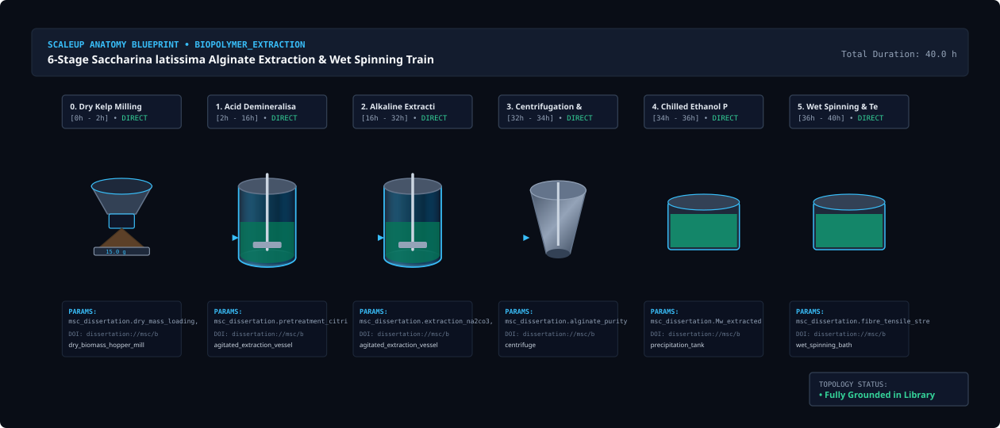
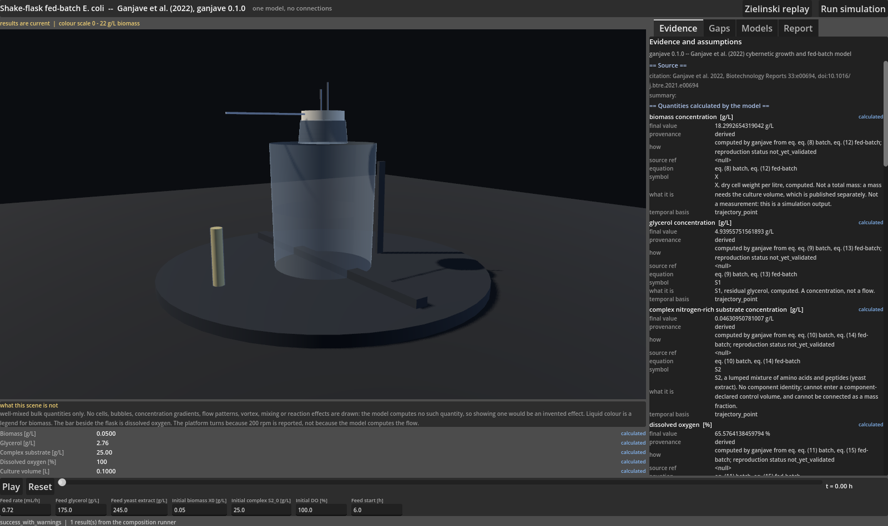
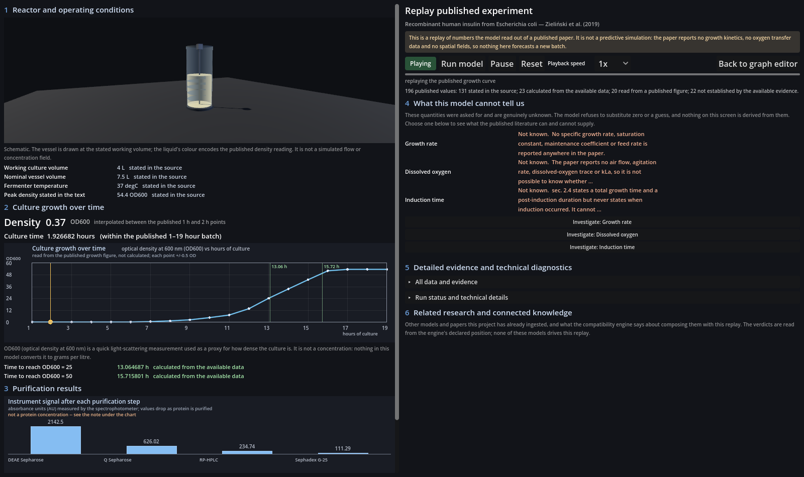
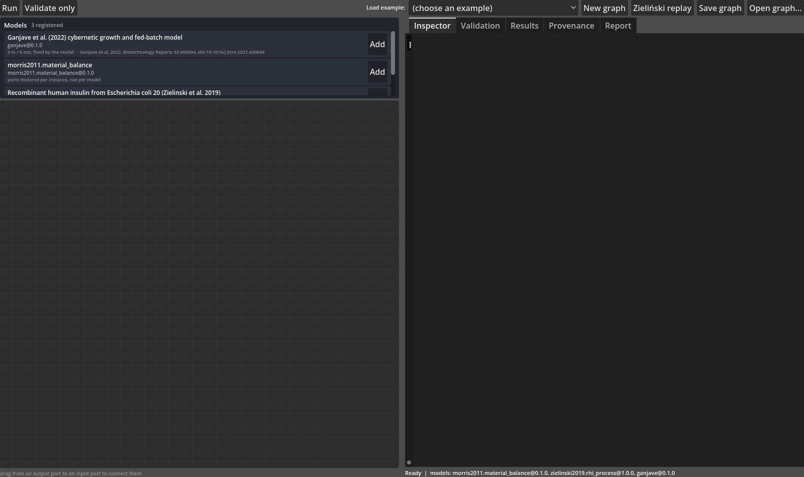

Describe what you want to make. In wet-lab and pilot-plant scale-up, a hallucinated kinetic constant or silent model substitution ruins batches; ScaleUp AI compiles peer-reviewed literature into mass-conserved, playable unit operations that hard-fail (InsufficientEvidenceError) when empirical data is missing.
From peer-reviewed literature to interactive 3D physics. Multi-stage biopolymer extraction and cybernetic microbial bioreactors with verified provenance.
—
—
—
Why standard generative AI and ungrounded physics engines fail in wet-lab and pilot-plant scale-up: a systematic engineering comparison.
| PARAMETER / BOUNDARY | STANDARD GENERATIVE AI [UNSAFE FOR SCALE-UP] | SCALEUP DETERMINISTIC COMPILER [VERIFIED // FAIL-CLOSED] |
|---|---|---|
| Kinetic Rates & Yield Constants | Hallucinates plausible-looking reaction kinetics and extraction yields without citation. Fills missing empirical values with ungrounded synthetic averages. | Zero-Hallucination Policy. Binds every parameter to verbatim quotes and SHA-256 primary paper digests. Refuses synthetic parameter invention. |
| Cross-Domain Model Transfer | Silently bridges microbial fermentation kinetics onto chemical solid-liquid extraction; mixes incompatible strains without warnings. |
Strict Domain Isolation. Enforces organism and unit-operation boundary locks. Flags cross-strain assumptions as explicit ANALOGUE_BRIDGE.
|
| Missing Empirical Evidence | Guesses missing boundary values to generate continuous charts, hiding experimental uncertainty from wet-lab operators. |
Fail-Closed Execution. Hard-halts with an explicit InsufficientEvidenceError and triggers autonomous OpenAlex literature queries.
|
| Mass & Thermodynamic Continuity | Generates superficial 3D animations or unbounded curves with non-conserved mass and arbitrary phase volumes. | Formal Stream Balancing. Enforces conservation of mass (∑ m_in = ∑ m_out), phase equilibrium boundaries, and mechanical shear continuity. |
| Simulation Artifacts | Ephemeral chat completions, ungrounded code snippets, and unverifiable qualitative summaries. | Executable 3D Workbench. Godot 4 WebGL/Native unit operations, typed port dependency graphs, and cryptographic audit ledgers. |
InsufficientEvidenceError halt report identifying the exact missing parameter.
How natural-language scientific protocols compile into mass-conserved, executable Godot 4 digital twins.
Decomposes natural protocols into sequential physical unit operations, fluid streams, phase boundaries, and isometric vector schematics.
Binds every reaction constant, yield coefficient, and boundary condition to DOI-indexed papers with verbatim quotes and SHA-256 digests.
Queries OpenAlex and CrossRef on the fly when knowledge gaps appear; hard-halts execution if primary evidence is missing.
Asynchronous stage streaming, MultiMeshInstance3D particulate continuity, interactive sandbox dials, and live provenance inspection.

Two distinct industrial bioprocess domains compiled on the exact same zero-hallucination engine.
Captured from the running ScaleUp AI Godot simulator: composing scientific process models through typed, unit-aware ports and executing with interactive 3D evidence replay.



Registered models (Zielinski insulin process, Ganjave, Morris material balance) are connected through typed, unit-aware ports. Required inputs have no defaults: a missing value blocks execution.
A graph can be validated into an execution plan or executed. Cycles are rejected, and each model runs in its own interpreter subprocess because dependencies cannot co-exist.
The 3D replay restates numbers read from a published paper and the accounting identities it supports. It reports no growth kinetics, no oxygen-transfer data, no AU calibration and no purification model - and declares those absences explicitly.
Under each missing quantity an Investigate button opens a panel: the model and run it was checked against, the gap in the model's own words, candidate findings from the literature with verbatim quoted passages, a dimension-by-dimension condition comparison, a verdict (incompatible / needs checking / compatible but not yet validated), and ten checkable validation criteria.
A model registry records every model with a stable id, version, digests, ports and units. A compatibility engine assesses whether two models may be composed, with refused pairs reporting the specific difference and what would resolve it.
Every displayed value carries a plain-language provenance label: stated in the source, read from a published figure, calculated from the available data, or not established by the available evidence.
Why cross-strain compatibility and mass transfer provenance matter in physical bioprocess engineering.
The paper reports agitation, aeration, dissolved-oxygen control, pressure, and exact feed profiles only partially - or not at all. The model records these as missing information rather than filling them in, so an engineer can see exactly what is unknown before attempting any prediction.
A finding reported for a different E. coli strain does not by itself prove evidence invalid. It introduces a compatibility question - same organism, different background - that must be evaluated before the evidence is reused or transferred.
Preserving evidence and surfacing unresolved questions is the value: the system reports what it does not know, so a human can decide whether a cross-strain result applies, instead of silently adopting it.
Tell us what physical system, chemical reaction, or bioprocess train you are engineering. Submissions generate a structured specification issue in our GitHub repository.
Listed by name and role only. Our credibility rests on the working prototype you can see above, not on unverifiable claims about individual backgrounds.
We are building an interactive workshop that turns humanity's scientific and engineering knowledge into executable digital twins. If you work on bioprocess engineering, chemical modeling, or pilot scale-up, explore the prototype now.